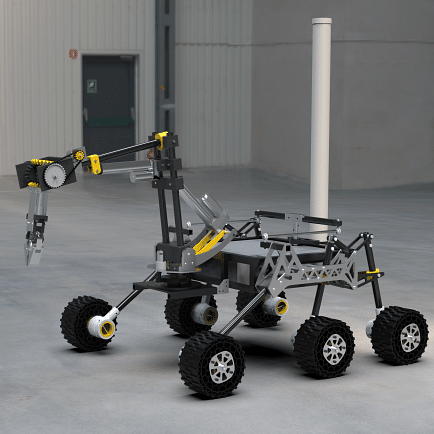
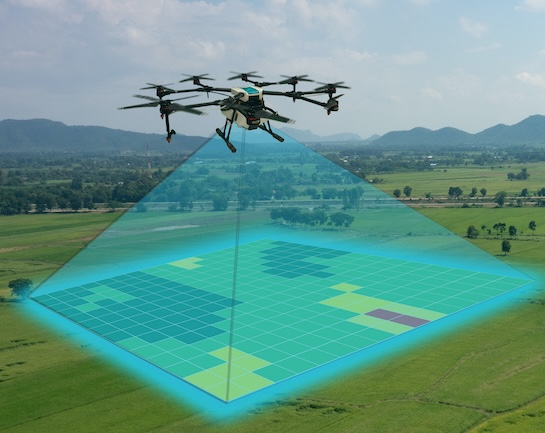

|
|
{kind=link}
|
I am a pre-final year undergraduate student at Birla Institute of Technology and Science Pilani where I'm pursuing my Bachelor's in Computer Science and Information Systems. My research interests include Autonomous Mobile Robotics, Deep Learning, Computer Vision and casual ML. I am also open to exploring Computer Networks and Systems. I am currently working with Dr. Amit Setia on developing an algorithm that makes use of Haar wavelets transformation for mapping areas using a drone. I have also interned at CSIR - CEERI, Pilani where I worked under Dr. Dhiraj Sangwan on digital restoration of Damaged Rajasthani Wall Murals using Deep Learning Techniques. We developed an end-to-end pipeline that included dataset preparation, pre-processing, damage segmentation and inpainting. Our paper has been selected for International Conference for Computer Vision and Image Processing 2023. I am the current Autonomous Subsystem lead of Project Kratos, a student-run multidisciplinary team making a Mars Rover capable of autonomous traversal. We have developed RTK-GNSS for accurate GPS coordinates and are currently exploring path-planning techniques using Pointclouds and Visual-Inertial Odometry (VIO) from Zed 2i. I was also a core member of Electronics and Robotics Club, where we worked with swarmbots and how they move through environments. Besides all this academic stuff, I like listening to music and writing poetry. I listen to many music genres, but my favourite is Pop music. I also like reading books and am currently reading Man's Search for Meaning. I also love playing Badminton and Table Tennis whenever I can. I also love to learn about history and human psychology. I'm actively looking for research internships and internship opportunities. Feel free to check out my CV or drop me an e-mail for a chat with me!
|
|
Apr '24 |
Project Kratos is selected for the University Rover Challenge '24. We managed to beat our last year's score and got 93/100! |
|
Mar '24 |
Project Kratos released the 2024 SAR for the University Rover Challenge '24. Watch it here! |
|
Jan '24 |
Went to Internation Rover Challenge '24, which was held in Coimbatore. Came 6th overall. |
|
Dec '23 |
Project Kratos released the 2024 SDDR for the Internation Rover Challenge '24. Watch it here! |
|
Sep '23 |
Research paper on digital restoration of Rajasthani Wall Murals accepted at CVIP2023. You can read the preprint here! |
|
Aug '23 |
Completed Research Internship at CSIR-CEERI Pilani under Dr. Dhiraj Sangwan. |
|
Jun '23 |
I will be an Instructor for a student-led course on ROS and Robotics through the Quark Summer Technical Projects. |
|
May '23 |
Selected as Autonomous Subsystem Lead at Project Kratos. Will be guiding the Autonomous Subsystem for the year '23 - '24. |
|
Mar '23 |
Project Kratos released the 2023 SAR for the University Rover Challenge '23 Watch it here! |
|
Jan '23 |
Went to Internation Rover Challenge '23, which was held in Bangalore. Bagged "Best Overall Rover" award. |
|
Sep '22 |
Joined Project Kratos as a Crew Member. |
|
Aug '22 |
Selected as PMP Mentor. Will be guiding Freshmen throughout their first year at college. |
|
Apr '22 |
Joined Electronics and Robotics Club as a Crew Member. |

|
Jun '23 - Aug '23 Worked under the supervision of Dr. Dhiraj Sangwan on Digital Restoration of Rajasthani Wall Murals using Deep Learning Techniques. |
|
|
Damage Segmentation and Restoration of Ancient Wall Paintings for Preserving Cultural Heritage
|
|


|
Autonomous Subsystem Lead
Developing a Mars rover as an interdisciplinary student-run team. We're responsible for the rover's autonomous navigation for the competitions University Rover Challenge and International Rover Challenge. Worked on a real-time object detector for the rover using YOLOv3 trained on our custom dataset and ran it on a Jetson Xavier AGX. Achieved integration with ROS using darknet_ROS. Designed a P-controlled visual servo algorithm to navigate directions based on arrow directions captured in a monocular camera feed. Integrated a PID-based GPS navigation mechanism to traverse between local GPS coordinates using RTK-GNSS-based GPS coordinates. Implementing Probabilistic Terrain Mapping algorithm using Point Clouds, Pose Estimates and Transformations. |

|
Under Dr. Dhiraj Sangwan Worked on identifying damaged regions from damaged Indian murals and using image inpainting techniques to digitally restore them. We initially created an exhaustive dataset by synthetically damaging clean images of wall paintings using binary masks and textures, followed by segmentation models, ensembling techniques for damage segmentation, and GAN-based architecture for image inpainting. |
|

|
Under Dr. Amit Setia Designing and Implementing a mapping algorithm for drones using point clouds and Haar wavelets, a mathematical function. The drone will be able to traverse autonomously in an unknown environment using the mapping information. |
This template is a modification to Jon Barron's website. Find the source code to my website here.